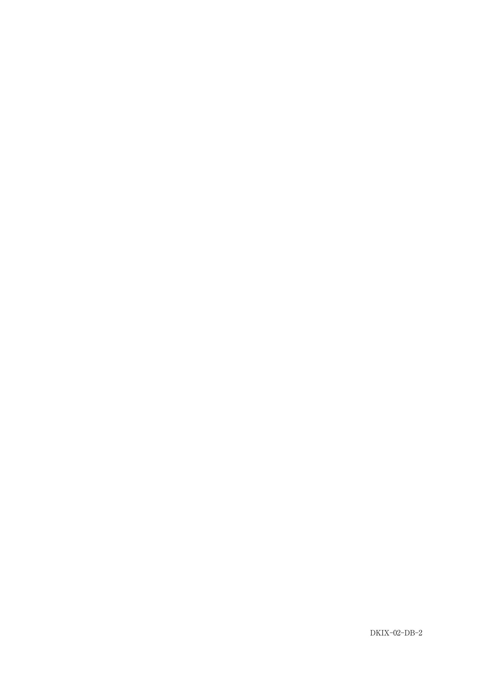

エナメル質やセメント質の欠損により露出象牙質に外来刺激（機械的・冷・温・化学的刺激、乾燥など）が加わると、一過性の短い鋭い疼痛を生じる疾患。
Brännströmが提唱した動水力学説が広く受け入れられている。刺激により象牙細管液が急速に移動し、象牙芽細胞や神経線維を刺激して疼痛が生じる。
発症部位の特徴：象牙細管数が多く、象牙細管の開口部が大きい
象牙質知覚過敏症では以下の所見が認められない：
治療の原理：
| 成分 | 化学式 | 作用機序 |
|---|---|---|
| シュウ酸カリウム | - | シュウ酸カルシウム形成で象牙細管を閉鎖 |
| フッ化ナトリウム | NaF | 不溶性カルシウム生成で象牙細管を閉鎖 |
| 硝酸カリウム | KNO3 | 神経の興奮を抑制（歯磨剤に配合） |
| 乳酸アルミニウム | - | 象牙細管を封鎖（歯磨剤に配合） |
| フッ化ジアミン銀 | - | 銀イオン粒子が象牙細管を閉鎖（サホライド） |
| 成分 | 化学式 | 理由 |
|---|---|---|
| リン酸 | H3PO4 | 象牙質を脱灰する |
| 過酸化水素 | H2O2 | 漂白剤（知覚過敏を起こす） |
| HEMA | - | 単独では無効（グルタルアルデヒドと併用） |
| 次亜塩素酸ナトリウム | NaClO | 根管洗浄剤 |
| 過ホウ酸ナトリウム | NaBO3・nH2O | 漂白剤 |
象牙質知覚過敏症に有効なのはどれか。2つ選べ。
【解説】化学式で出題されるパターン。b KNO3（硝酸カリウム）は神経の興奮を抑制し、e NaF（フッ化ナトリウム）は不溶性カルシウムを生成して象牙細管を閉鎖する。a H3PO4（リン酸）は脱灰作用、c NaBO3・nH2O（過ホウ酸ナトリウム）とd NaClO（次亜塩素酸ナトリウム）は漂白・洗浄用。
象牙質知覚過敏症に有効なのはどれか。2つ選ぺ。
【解説】d シュウ酸カリウムはシュウ酸カルシウムを形成して象牙細管を閉鎖する。e フッ化ナトリウムは不溶性カルシウムを生成する。a リン酸は脱灰作用、b HEMAは単独では無効（グルタルアルデヒドと併用で効果）、c 過酸化水素は漂白剤で知覚過敏を起こす。
48歳の女性。下顎前歯部のブラッシング時の疼痛を主訴として来院した。初診時の口腔内写真（別冊No.2A）とエックス線写真（別冊No.2B）とを別に示す。
診断に必要なのはどれか。2つ選べ。

【解説】象牙質知覚過敏症の診断には、a 擦過診（探針で擦過して痛みを確認）とc 温度診（冷水刺激で一過性の痛みを確認）が有効。b 麻酔診は歯髄炎の診断、d 根尖部触診は根尖性歯周炎の診断、e 歯髄電気診は歯髄の生死判定に用いる。